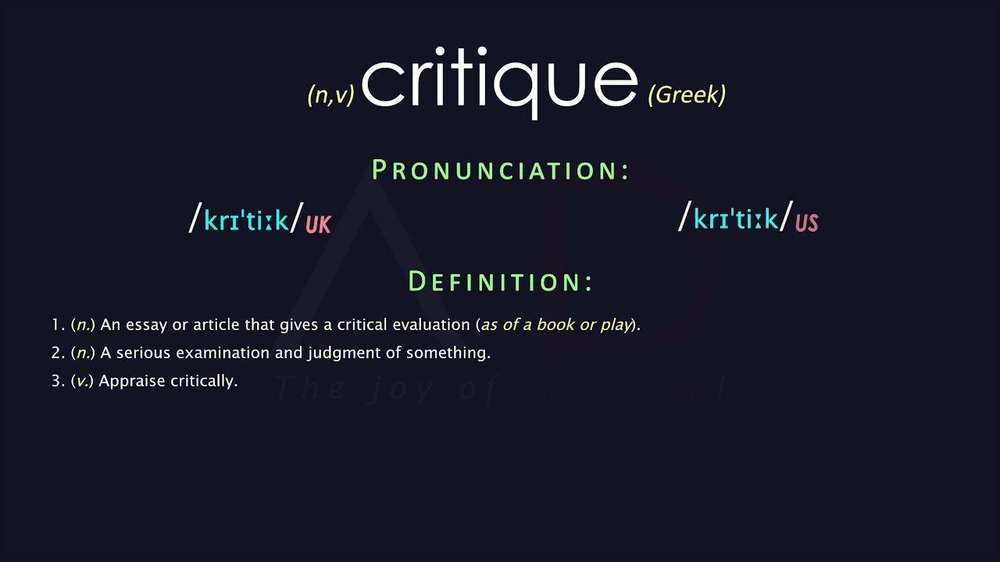

Questions
- What was your first impression of this site?
- How does this site organize the flow of information? (Do they have links on the left and text on the right? Some other scheme? No scheme?)
- Does the site structure make sense or does it confuse you? Why?
- Does the site graphics/layout/multimedia enhance the site or detract from it? Why?
- How long did it take for the home page to load? Was the load time reasonable?
- Was the text color and size readable? If a background color or image was used, did it enhance or detract from the site?
- Did the site have a navigation bar or other navigation tool? Was the navigation well done?
- Did the site have a color scheme or look and feel that was repeated on all the pages?
- How does the site respond to smaller window sizes (responsive design)?
- What does this site offer that was unusual or very well done?
Web Site Critiques
-
My first impression of this website is that it looks neat and organized. It provides several different links that allow me to
find various types of information I might be looking for as a traveler.
-
The website organizes information with links on the left side that redirect users to different pages with specific content.
It also uses images and heading text as links to guide users to articles on the home page.
-
The site structure makes sense because it uses a main homepage that connects to subpages. This helps organize information
clearly and makes it easy to find what you are looking for without feeling overwhelmed.
-
The graphics enhance the site because they match the theme and do not distract from the main content. They support the overall
design without making the page feel cluttered.
-
The site loads relatively quickly, but the images sometimes take slightly longer to load than the rest of the page. This creates
a small delay between text and visuals appearing.
-
The text is easy to read, and the headers are clearly distinguishable. This helps users easily identify different sections of
content.
-
The website includes a navigation bar that is well designed and easy to use. It keeps many links hidden until needed, which helps
reduce clutter on the page.
-
The website uses a consistent design throughout all pages. It features a dark gray background with black text, which gives it a
professional appearance and makes it easy on the eyes. A banner image at the top also matches each page's content.
-
When the window is resized, the images shrink and the layout adjusts slightly. However, after a certain point, the navigation
bar disappears and images stop shrinking, which can make navigation more difficult on smaller screens.
-
Overall, the website does a good job of organizing many pages in a clean and simple way. The homepage is not overwhelming
and presents information in a clear and accessible manner.